Forschungsgruppe Kihug -
Modellbasierte Generierung von Synthetischen Trainingsdaten
Das Forschungsprojekt:
KIhUG - KI-gestützte hochautomatisierte Unkrautbekämpfung im Grünland
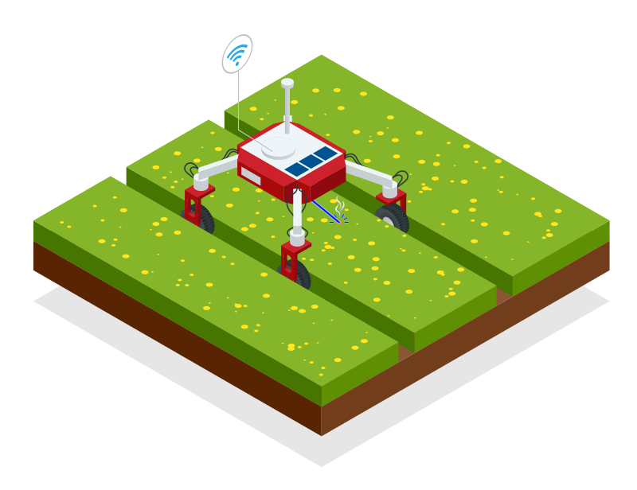
Entwicklung eines technischen Sytems, welches schädliche Pflanzen (speziell im Pilotprojekt Jakobskreuzkraut) erkennt, monitort und umweltverträglich bekämpft
Mein Aufgabenbereich:
Generierung modellbasierter, synthetischer Bilddaten um die Geschwindigkeit der Erstellung und die Vielfalt der Variationen im Trainingsdatensatz zu erhöhen.
Recherche:
Vergleichbare Projekte und Ansätze
Few-leaf Learning - Ronja Güldenring:
Anwendung der Cut, Paste and Learn-Methode zur Erstellung eines Trainignsdatensatzes zur Segmentierung von
Unkrautblättern im Grünland.
Feld und Tag-Spezifisch
Rumex obtusifolius (broad-leaved dock) and Cirsium vulgare (spear thistle)
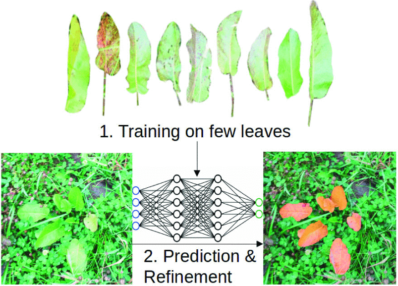
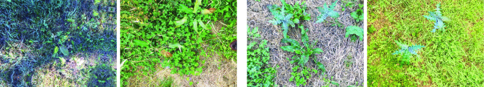
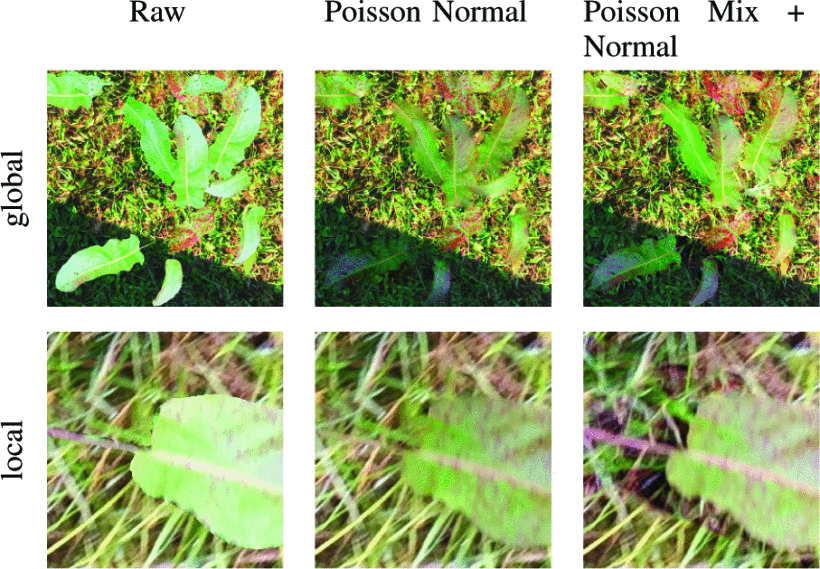
Automatic model based dataset generation for fast and accurate crop and weeds detection - Maurilio Di Cicco:
Nutzung einer Simulationsumgebung, zur Segmentierung von Unkrautpflanzen in einem Zuckerrübenfeld.
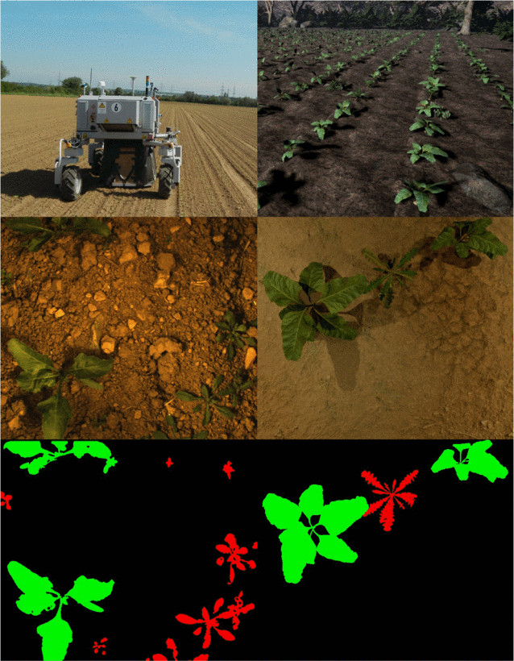
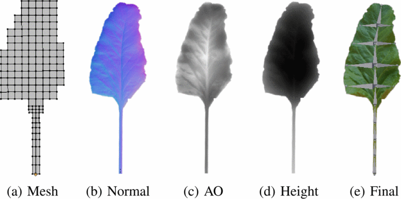
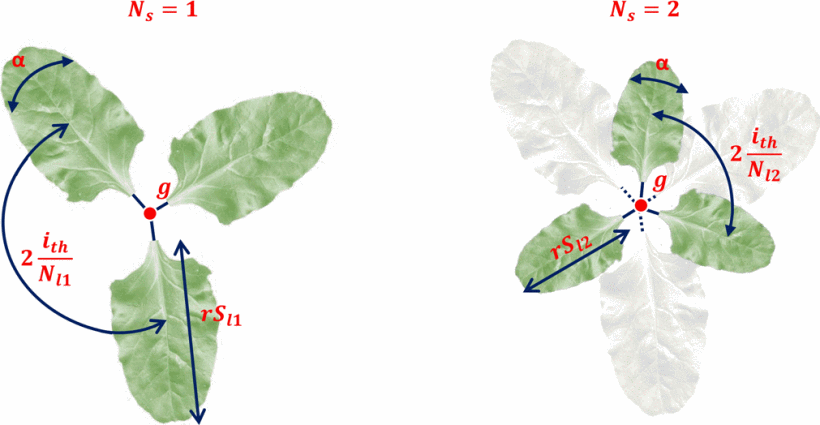
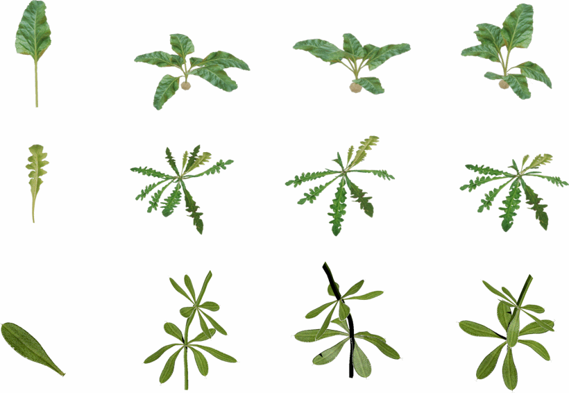
Herausforderungen
- Reality-Gap - Evaluating synthetic vs. real data generation for AI-based selective weeding - Naeem Iqbal [3]
- Abbilden der komplexen Topologie
- Starke Varianz je nach Alter der Pflanze / Wachstumsstadium
- Auswirkungen von Umwelteinflüssen
- Vielfalt von Pflanzen im Weideland
KIhUGEN
KI gestützte hochautomatisierte Unkrautgenerierung - Ein Tool um verschiedene Generierungsansätze zu vergleichen
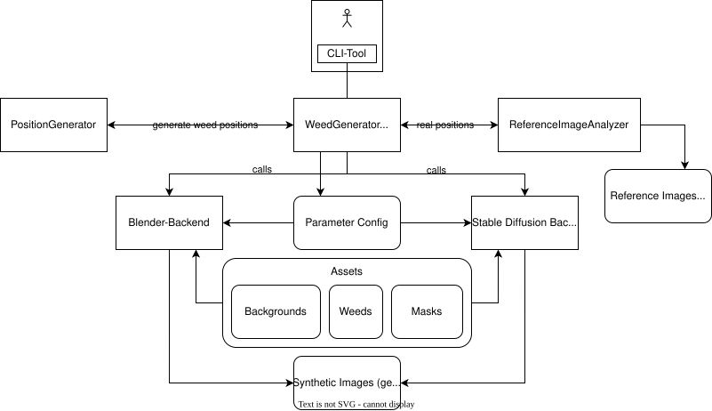
Weed Annotator Datensatz
Nach ein paar Bugfixes generiert der Weed-Annotator Bilder mit unseren realen Kameraaufnahmen.
21 ausgeschnittene Blätter, 6 ausgeschnittene ganze Pflanzen
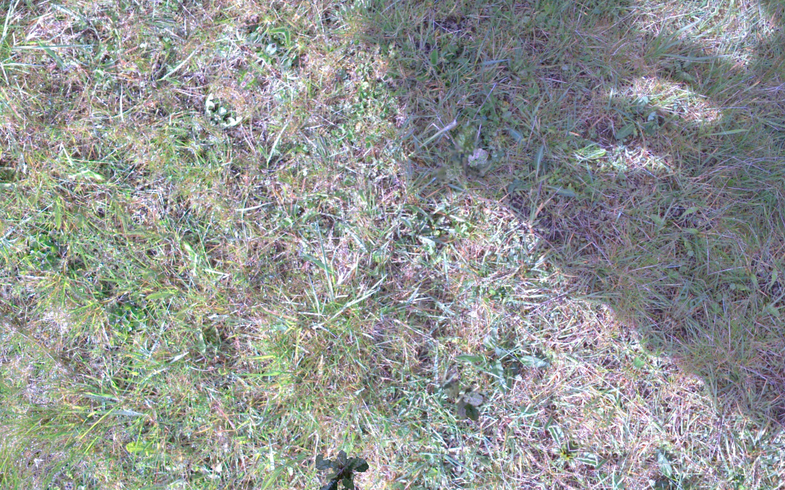
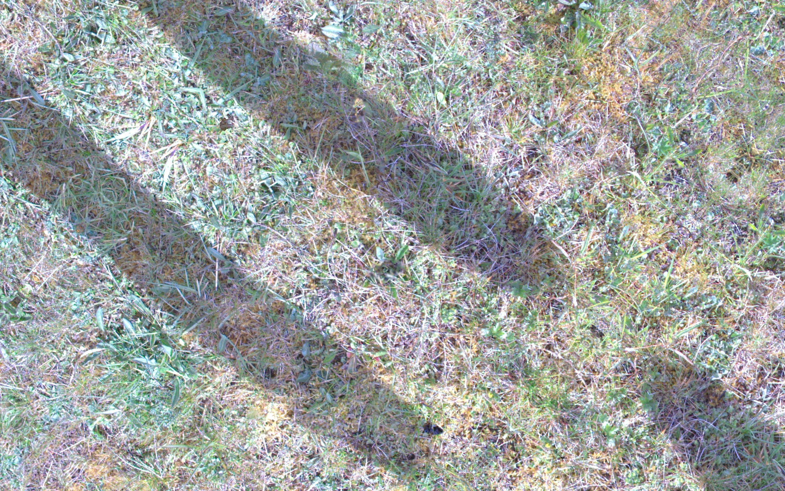
Evaluierung auf Realen Daten
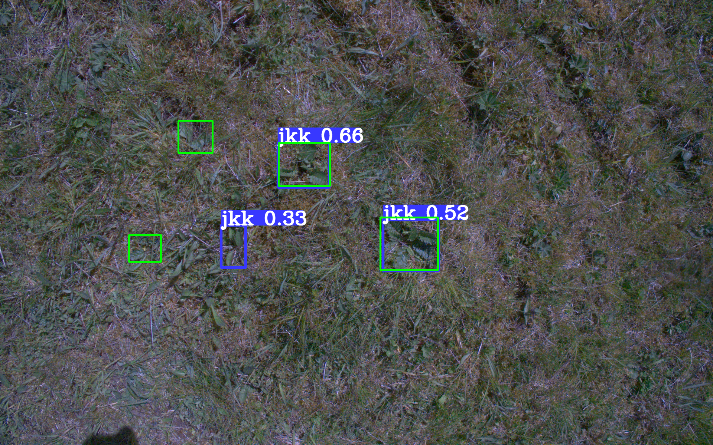
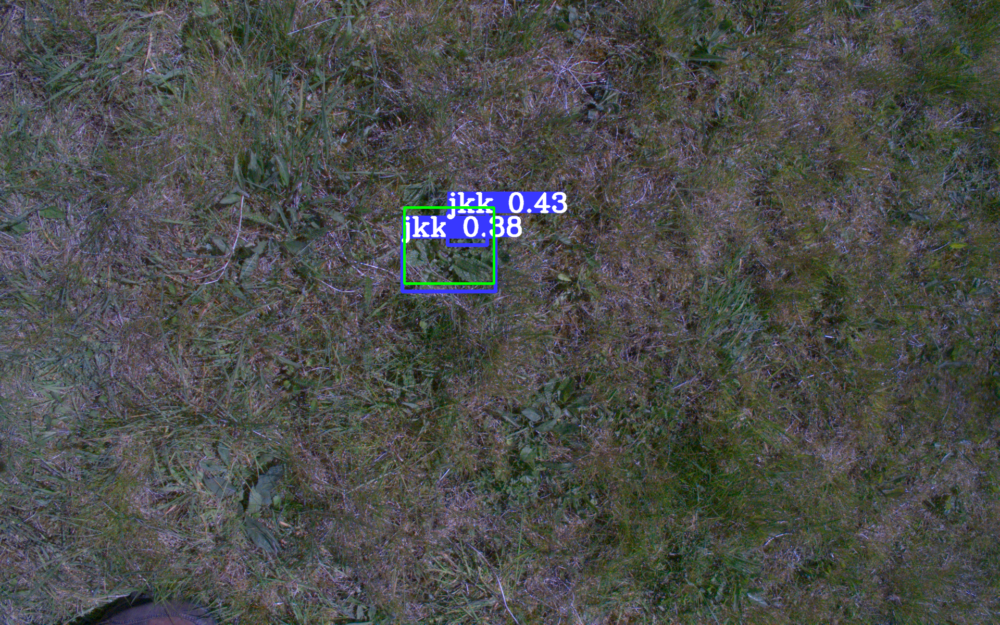
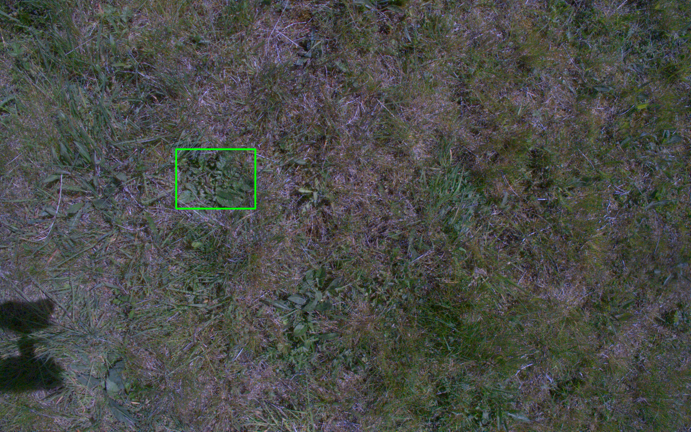
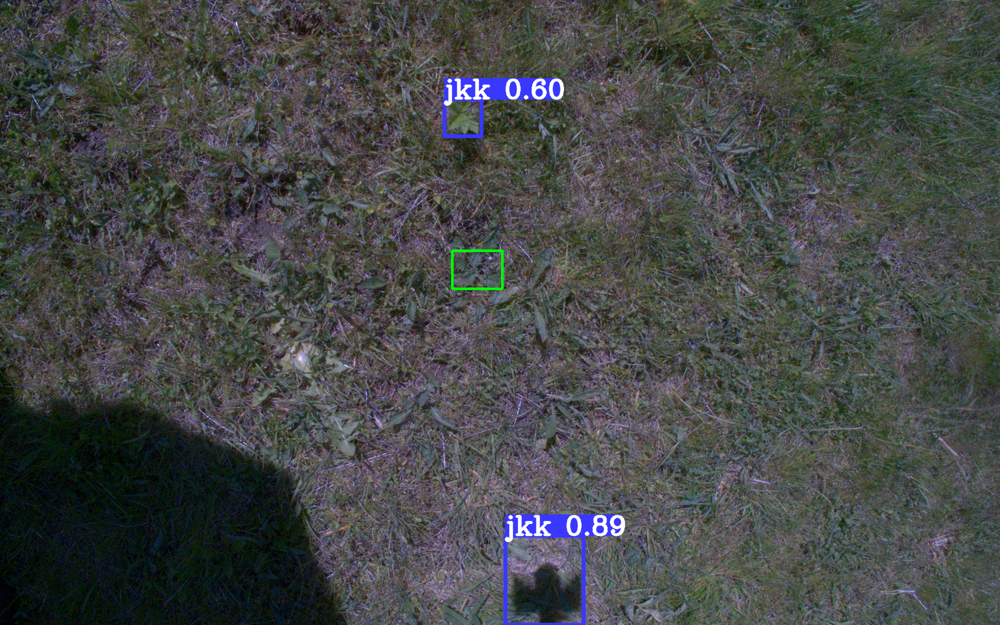
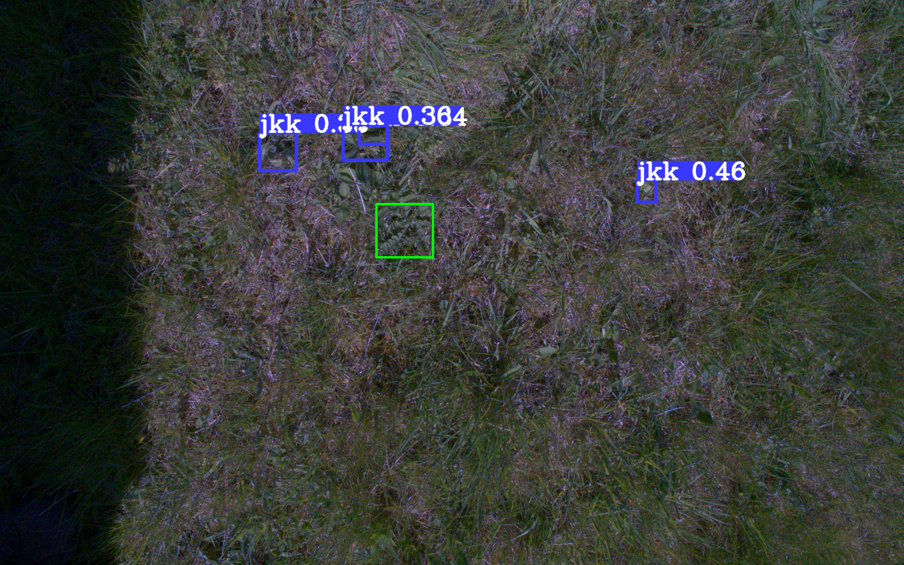
~4% map
Simulationsumgebungen
Nvidia Omniverse & Blender
Vorteil: Komplette Scenerie kann nach belieben personalisiert werden und Masken bzw. Boxen um Objekte direkt
generiert werden.
Nachteil: Die Komplette Scenerie muss personalisiert gebaut werden
Versuch: 3D Scannen der Pflanzen
Modellierung der Pflanze
Optimierungen & Ergebnisse
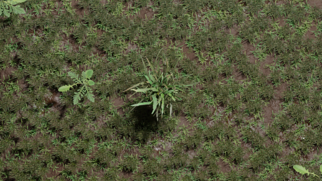
.png)
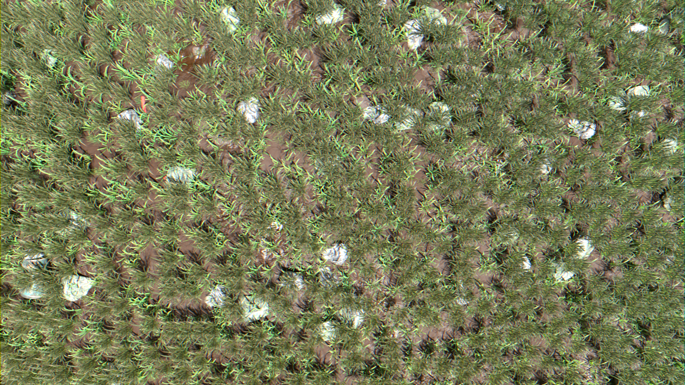
Inhalt meiner Thesis
Wie in der Evaluierung bereits angeschnitten wurde, konnte noch keine zufriedenstellende Verbesserung des
Trainignsdatensatzes mittels modellbasierter synthetischer Daten erreicht werden.
Nach weiterer Optimierung der beiden Verfahren, möchte ich in meiner Bachelorarbeit diese Methoden
gegeneinander stellen sowie deren Anwendbarkeit auf realen Daten untersuchen.
Quellnachweis & Abbildungsverzeichnis:
[1] R. Güldenring, E. Boukas, O. Ravn, und L. Nalpantidis, „Few-leaf Learning: Weed Segmentation in
Grasslands“, in 2021 IEEE/RSJ International Conference on Intelligent Robots and Systems (IROS), Prague, Czech
Republic: IEEE, Sep. 2021, S. 3248–3254. doi: 10.1109/IROS51168.2021.9636770.
[2] N. Iqbal, J. Bracke, A. Elmiger, und H. Hameed, „Evaluating synthetic vs. real data generation for
AI-based selective weeding“.
[3] M. Di Cicco, C. Potena, G. Grisetti, und A. Pretto, „Automatic model based dataset generation for fast and
accurate crop and weeds detection“, in 2017 IEEE/RSJ International Conference on Intelligent Robots and
Systems (IROS), Sep. 2017, S. 5188–5195. doi: 10.1109/IROS.2017.8206408.